Ombra
Zu jeder Version gibt es Hinweise, was sich geändert hat und wie man aktualisiert.
Eine kostenlose Windows-App für deine ganze VR-Sitzung: Ganzkörper-Tracking für HaritoraX und SlimeVR-kompatible Tracker, eine VRChat-Chatbox mit deiner Musik und deinem Puls, Schutz vor Crashern und Panels am Handgelenk.
Ombra bringt HaritoraX und SlimeVR-kompatible Tracker selbst in SteamVR, ohne weitere App. Es baut deinen Körper aus den Sensoren und deinem Headset auf, glättet jeden Tracker und korrigiert Drift, während du spielst.
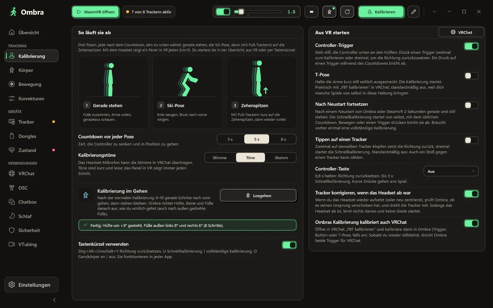
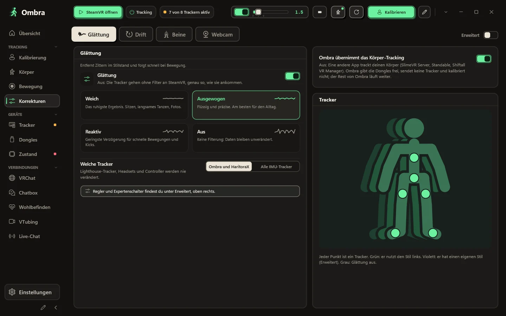
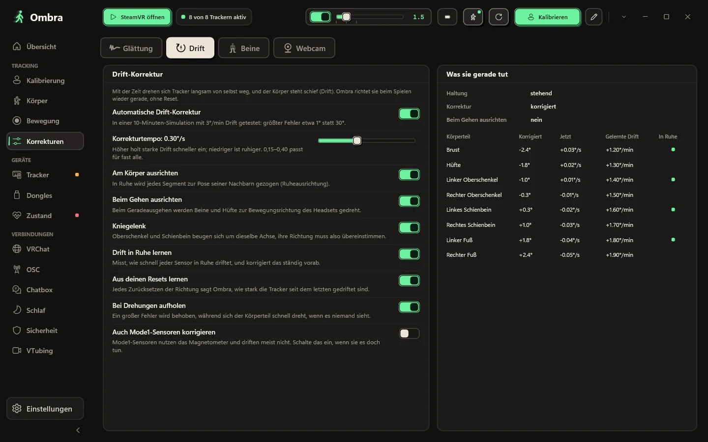
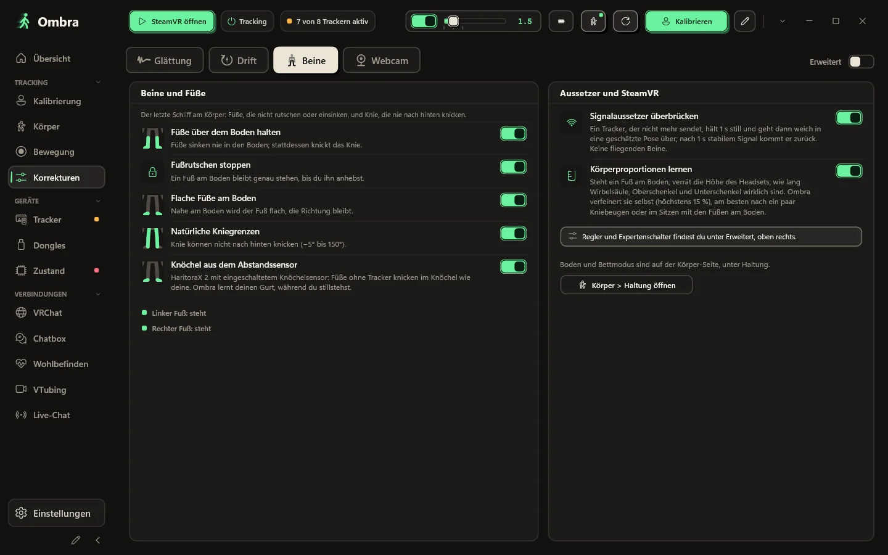
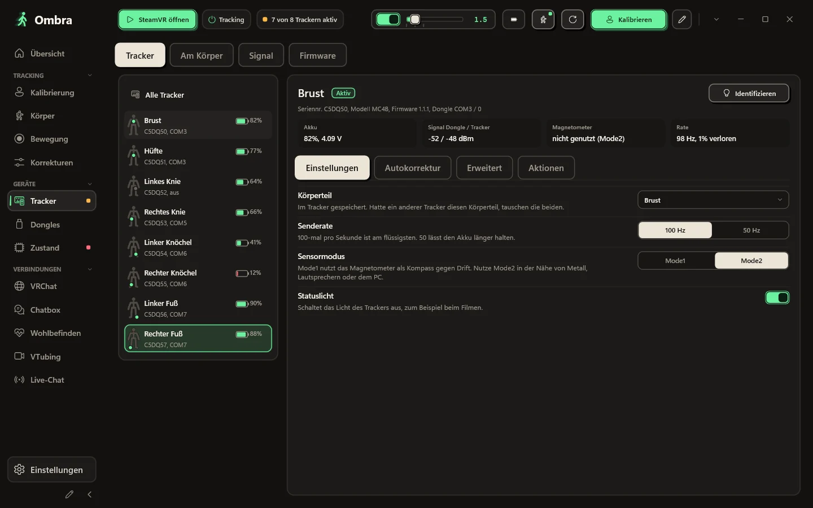
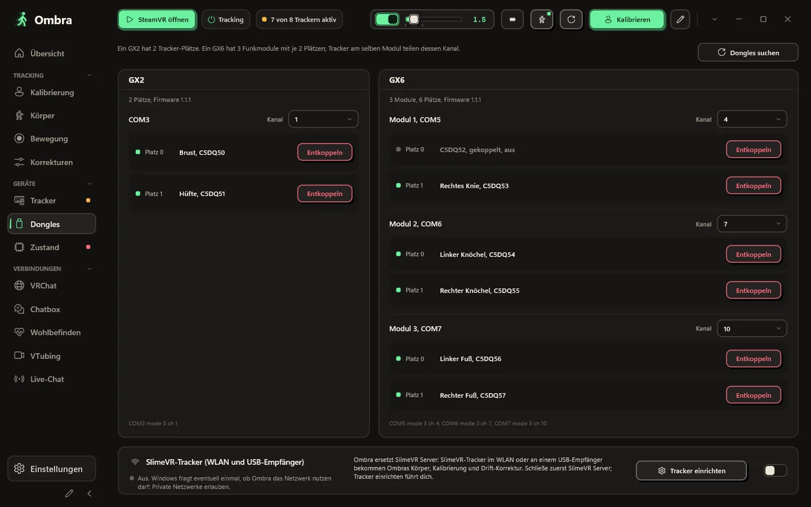
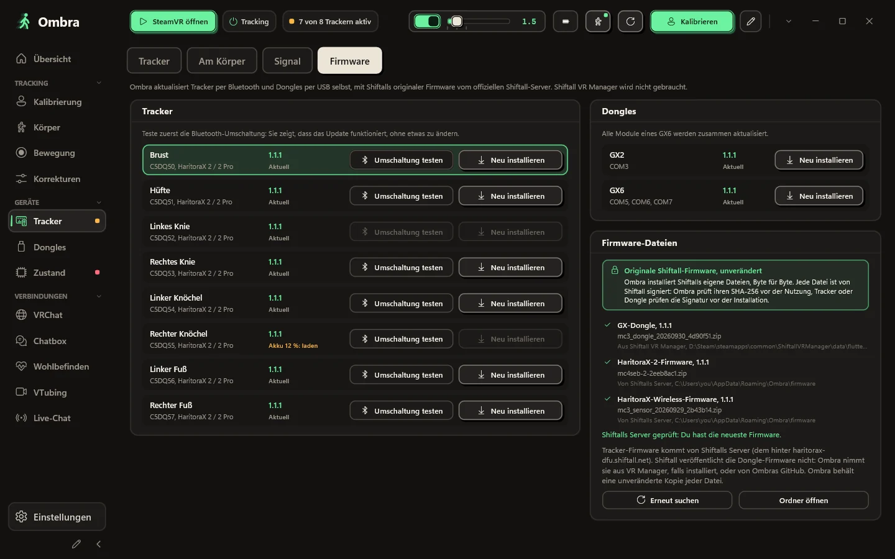
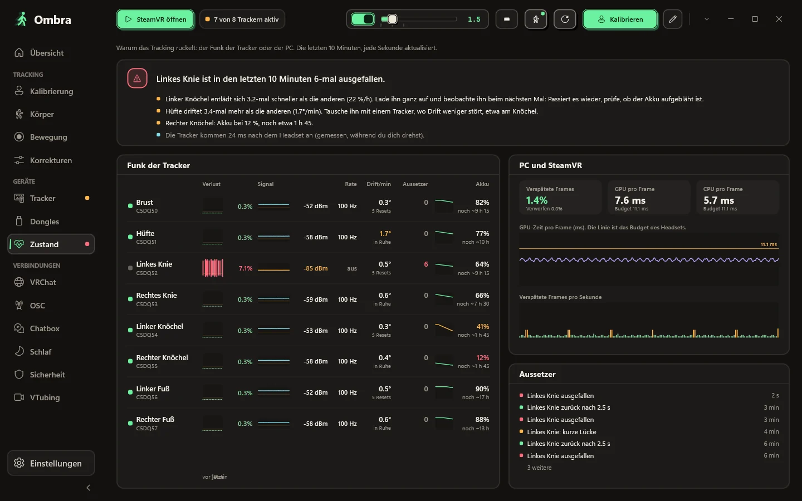
Der Körper, den Ombra aus deinen Sensoren und dem Headset aufbaut, von vorne, von der Seite oder frei in 3D. Jeder Tracker zeigt, ob er getrackt wird, simuliert wird oder kein Signal hat.
Gerade stehen, in die Ski-Pose gehen, dann mit Fuß-Trackern auf die Zehenspitzen. Stimmt etwas nicht, zeigt Ombra, welchen Körperteil du prüfen solltest.
Weich, Ausgewogen, Reaktiv oder Aus, oder jede Stufe dazwischen per Regler. Gib einem einzelnen Tracker seinen eigenen Stil, zum Beispiel ruhigere Füße.
Die Drift-Korrektur läuft, während du spielst, und eine Live-Tabelle zeigt, was sie an jedem Körperteil tut.
Dein Körper bleibt glaubwürdig: Die Füße bleiben über dem Boden, stehende Füße rutschen nicht, Knie knicken nie nach hinten.
Seriennummer, Firmware, Dongle-Platz, Akkuspannung, Signal auf beiden Seiten, Magnetometer-Status und die echte Senderate.
Ein GX2 hat zwei Plätze, ein GX6 hat drei Funkmodule mit je zwei Plätzen. Ombra zeigt jedes Modul, den Tracker auf jedem Platz und seinen Kanal.
Aktualisiere Tracker per Bluetooth und Dongles per USB, mit den unveränderten Original-Firmware-Dateien von Shiftall.
Wenn das Tracking ruckelt, zeigt die Zustandsseite, woher es kommt: verlorene Pakete, Signal und echte Senderate jedes Trackers, neben den Frames, die SteamVR verworfen hat.
Wähle einen Look, was gezeigt wird und in welcher Reihenfolge. Ombra hält alles in der Blase und überflutet sie nie.
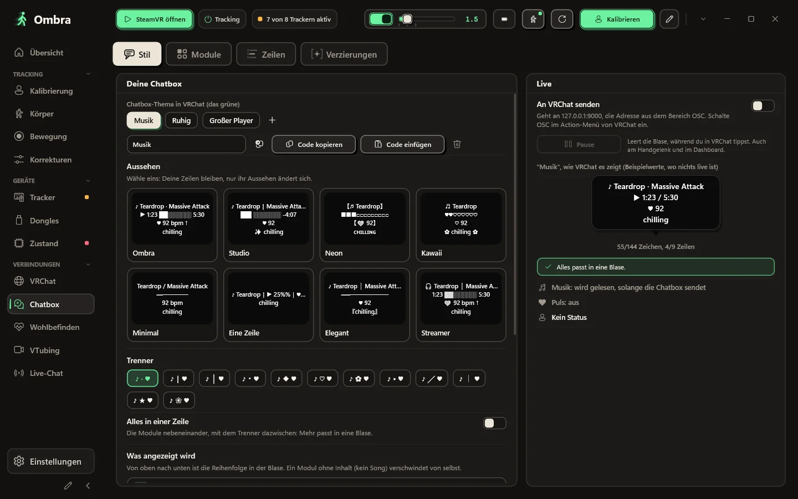
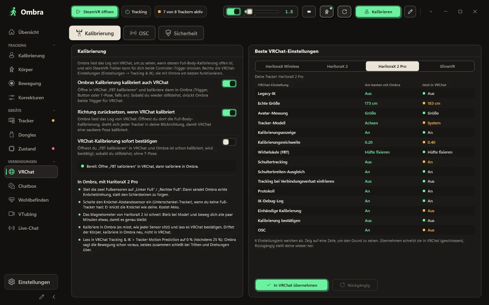
Starte mit einem Look: acht echte VRChat-Blasen, gezeichnet mit deinen eigenen Zeilen, von schlicht bis kawaii. Schalte Module an und aus, schieb sie nach oben oder unten, wähle einen von zwölf Trennern, die VRChat wirklich zeichnet, oder pack alles in eine Zeile.
T7RK-1J85-6, ohne Server dazwischenOmbras Kalibrierung kalibriert VRChat gleich mit, und die Ganzkörper-Einstellungen, die VRChat für deine Tracker empfiehlt, sind nur einen Klick entfernt und lassen sich rückgängig machen.
VRChat notiert, wer beitritt und welchen Avatar er lädt. Ombra liest dieses Log auf deinem PC: Nach einem Absturz siehst du den wahrscheinlichen Crasher, und sein Avatar ist mit einem Klick ausgeblendet.
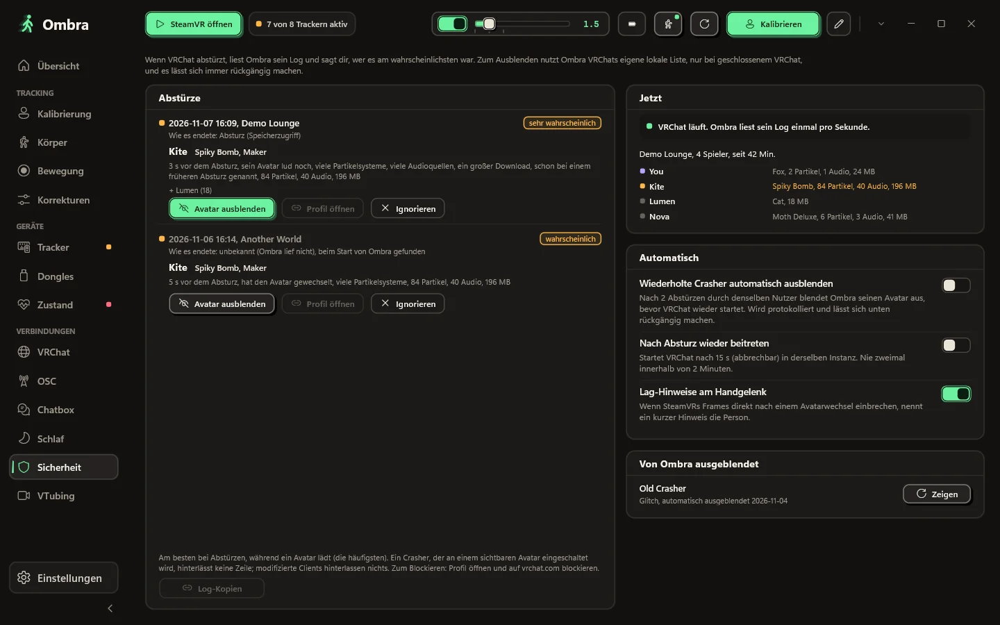
Was du beim Spielen brauchst, findest du am Handgelenk und im SteamVR-Dashboard.
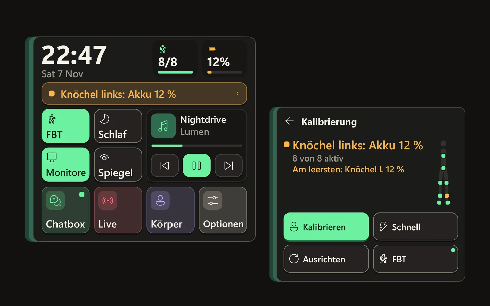
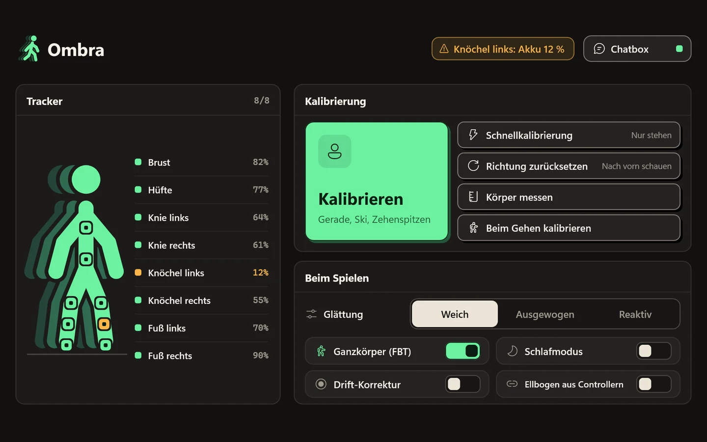
Schau auf dein Handgelenk, und das Panel blendet sich ein: eine große Uhr, wie viele Tracker aktiv sind und der leerste Akku, der Kalibrierungsstatus, vier beschriftete Schalter (Ganzkörper, Schlaf, Bildschirme, Spiegel) und deine Musik. Auch die Benachrichtigungen deines PCs erscheinen dort. Schaust du weg, ist es wieder verschwunden.
Jeder Tracker mit seinem Akku, große Buttons für Kalibrieren und Richtung zurücksetzen und die Schalter, die du beim Spielen änderst.
Ordne die Seitenleiste und wähle deine eigenen Farben. Ein Klick stellt das Original wieder her.
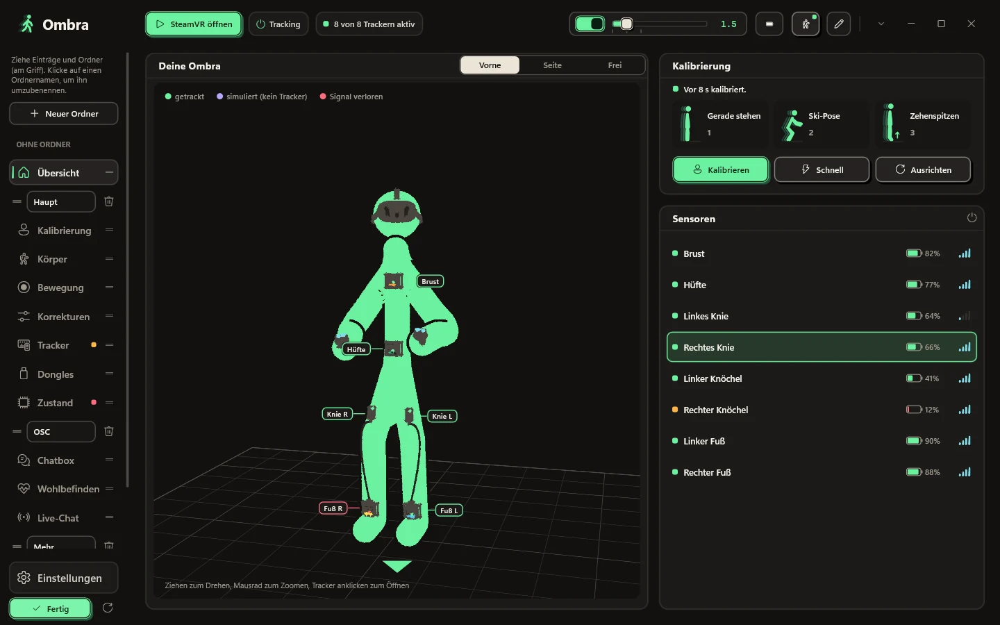
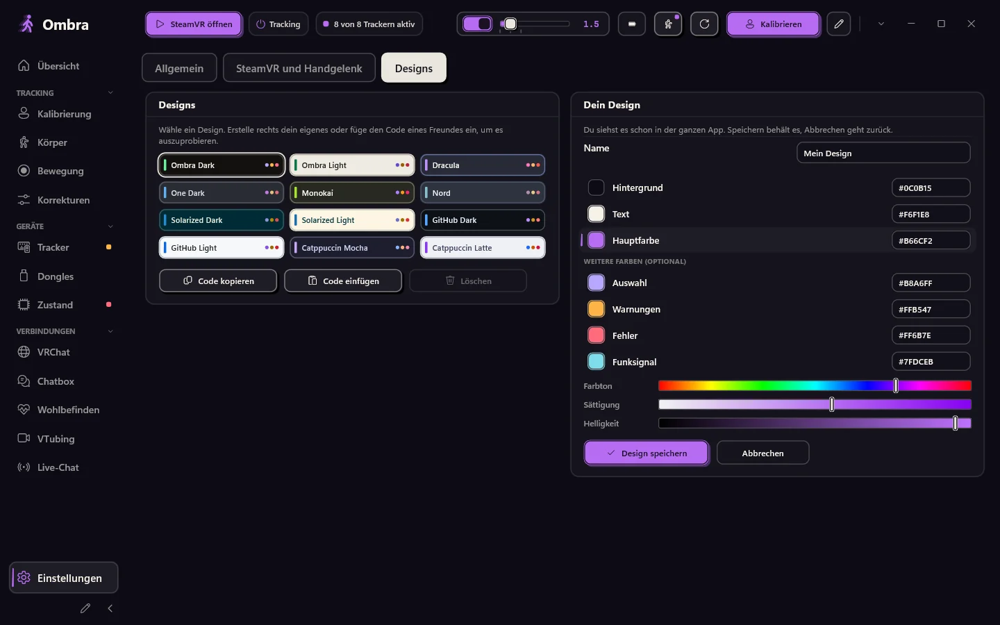
Tippe auf den Stift unten in der Seitenleiste: Leg Ordner an, benenne sie und zieh Einträge und ganze Ordner, wohin du willst.
Einstellungen → Designs → Dein Design: Wähle Hintergrund, Textfarbe und Hauptfarbe, mit Reglern oder Hex-Codes. Ombra berechnet den Rest. Du siehst es sofort in der ganzen App und in den Panels in VR; speichere es oder brich ab, um zurückzugehen.
Kein Browser drin, dafür 12 Farbdesigns und dein eigenes. SteamVR startet Ombra, und es wartet im Infobereich mit einem Panel für deine Tracker.
Die Buttons, die du am meisten nutzt, in der Reihenfolge, die du willst.
Ombra sagt dir, wenn eine neue Version da ist, und aktualisiert nie, solange SteamVR läuft.
Optional: Nach einem Neustart kalibriert Ombra von selbst, sobald du stillstehst.
Hier steht alles, was Ombra mit dem Internet macht, und alles, was es nicht macht.
Ombra ändert sich oft. Hier steht, was die neueste Version bringt, direkt aus ihren Versionshinweisen, und was davor kam.
Ombra
Zu jeder Version gibt es Hinweise, was sich geändert hat und wie man aktualisiert.
Windows 10 oder 11 (64 Bit) und SteamVR. HaritoraX 2, 2 Pro oder Wireless mit einem GX-Dongle, oder SlimeVR-kompatible Tracker.
Eine Datei, Ombra-Setup.exe. Der Button unten lädt immer die neueste Version.
Die Dongles kann immer nur eine App gleichzeitig nutzen.
Es braucht keine Adminrechte und registriert den SteamVR-Treiber. Wenn Windows dich warnt, sieh dir die Fragen unten an.
Schalte deine Tracker ein, starte SteamVR, leg die Tracker an und drück auf Kalibrieren.
Neueste Version. Alle Versionen und Änderungen
Jede Version wird mit Microsoft Defender geprüft und bei VirusTotal hochgeladen: zum Bericht.
Wenn etwas fehlt, frag auf GitHub.
Nein. Ombra liest die Dongles selbst, koppelt Tracker und aktualisiert die Firmware mit Shiftalls Originaldateien. Lass andere Tracker-Apps geschlossen, solange Ombra läuft.
HaritoraX 2, 2 Pro und Wireless über GX2- oder GX6-Dongles sowie SlimeVR-kompatible Tracker über WLAN oder einen USB-Empfänger, zum Beispiel Butterfly und Smol Slime. Lighthouse-Tracker wie Vive-Tracker lassen sich an einer Quest ausrichten, und Ombra kann auch andere IMU-Tracker in SteamVR glätten. HaritoraX 1 (mit Kabeln) wird nicht unterstützt.
Ja. Mit einem PC über SteamVR, per Kabel oder kabellos. Läuft VRChat direkt auf der Quest, sendet Ombra deinen Körper per OSC von deinem PC aus, ohne SteamVR.
Der Installer ist noch nicht codesigniert, deshalb kennt SmartScreen ihn nicht. Klicke auf Weitere Informationen und dann auf Trotzdem ausführen. Das Setup installiert in deinen Benutzerordner und braucht keine Adminrechte.
Das Setup installiert Ombras eigenen SteamVR-Treiber. Deine Tracker erscheinen in SteamVR mit bereits zugewiesenen Rollen (Hüfte, Brust, Knie, Füße, Ellbogen), und SteamVR startet Ombra für dich.
Nein. Lighthouse-Geräte, Headsets und Controller werden nie verändert. Der Treiber erstellt nur Ombras virtuelle Tracker und glättet andere IMU-Tracker, aber nur, wenn du das einschaltest.
Nein. Viele nutzen Ombra nur für die Chatbox, die VRChat-Werkzeuge und den Körper aus dem Headset. Wähle bei der Installation Keine Tracker, und Ombra fragt nie nach einem Dongle.
Ja. Starte Ombra.exe --demo für acht Demo-Tracker an einem GX2 und einem GX6. Die Demo greift nie auf COM-Ports, Bluetooth, SteamVR oder deine Einstellungen zu.
Die App und diese Website gibt es auf Englisch, Italienisch, Deutsch, Französisch, Spanisch, brasilianischem Portugiesisch, Japanisch, Koreanisch, vereinfachtem Chinesisch und Russisch. Ombra übernimmt deine Windows-Sprache, und in den Einstellungen kannst du sie ändern.
Nein. Ombra ist ein unabhängiges Projekt, kostenlos zum Herunterladen und Nutzen. Der Quellcode ist nicht öffentlich; Funktionen, Erweiterungen und Übersetzungen kannst du auf GitHub vorschlagen.
Ja. Ombra wird von einem einzelnen Entwickler mit KI-Werkzeugen gemacht, vor allem Claude von Anthropic: für Recherche, Code, Tests und Übersetzungen. Was Ombra tut, entscheidet der Entwickler, und jede Version gibt er selbst frei. Keine KI-Bildgeneratoren: Die Screenshots sind echte Aufnahmen der App. In Ombra selbst nutzt nur das optionale Diktieren in die Chatbox KI: Das Whisper-Modell läuft auf deinem PC, und deine Stimme verlässt ihn nie.
Ombra-Setup.exe wird heruntergeladen
Meldet Windows „Der Computer wurde durch Windows geschützt“, klicke auf Weitere Informationen und dann auf Trotzdem ausführen. Der Installer ist noch nicht codesigniert, deshalb kennt SmartScreen ihn nicht.
Wenn Ombra bei dir gut läuft, hilft ein Stern auf GitHub anderen, es zu finden.
Stern auf GitHub geben